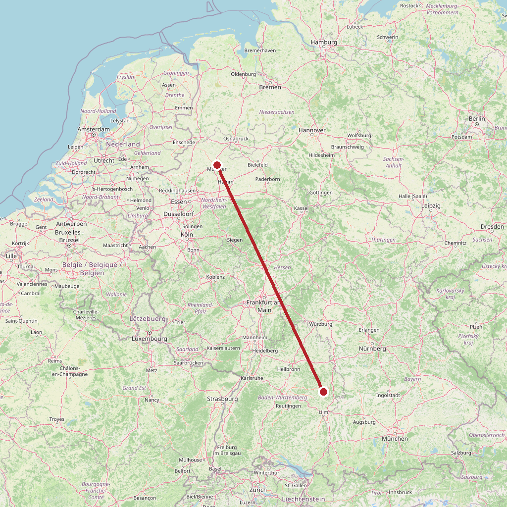
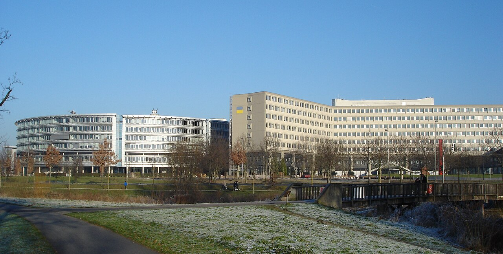
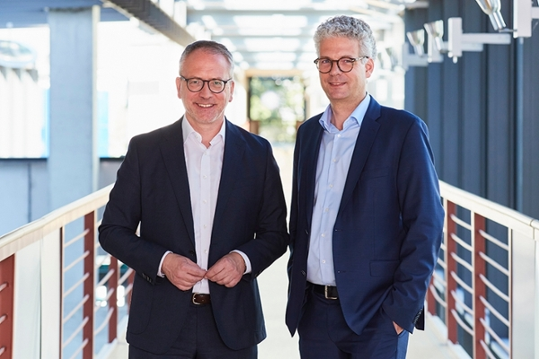
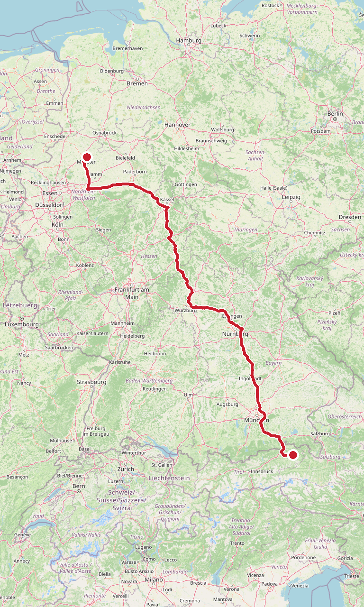
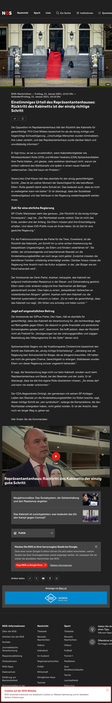
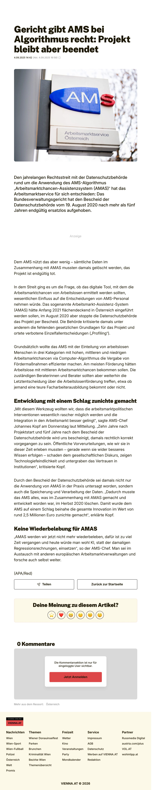
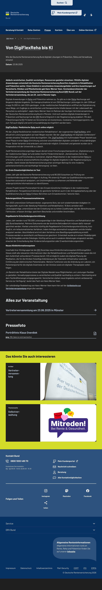

ToDo
Zeitplan
KundeHarro Höfliger, Bartholomä
Speaker-Kalender „Kunde", 13:00–17:00. Zuschlag 08.10.2026. Harro Höfliger hat in Bartholomä keinen eigenen Standort — externe Location im Ostalbkreis.
FehltAdresse, Vortragszeit, Thema, Publikum. Kommt von Daniel.
FahrtBartholomä → Münster · 542 km · reine Fahrzeit 5 h 28
A7 Würzburg — A3 Frankfurt — A45 Sauerlandlinie über Siegen — A1 Dortmund — Münster. Fahrer Florian Kaufmann.

HotelHotel Kaiserhof Münster · Bahnhofstr. 14 · 2,2 km zur Gartenstr. 194
| Christoph | KAISERHOF-6CEC3B-17338-2 · Einzelzimmer Standard · 144 € |
| Florian Kaufmann | KAISERHOF-6CEC3B-17338 · Einzelzimmer Standard · 144 € |
| Bedingungen | Garantiert, Ankunft nach 18 Uhr · Zahlung im Hotel · Frühstück nicht inklusive, 24 € p. P. · Storno kostenfrei bis 02.11., 18:00 · Tel. +49 251 4178 623 |
ChristophTechnikcheck
Deutsche Rentenversicherung Westfalen, Gartenstr. 194. Im Speaker-Kalender, von Daniel am 12.10. eingetragen.
Abstimmung 12.10.: „ich denke, dass ich Sie am Empfang abholen werde" (DRV). Eigener Laptop per HDMI, Ton. DRV stellt Headset — du bevorzugst Handmikro. Zwei Saalmikros für Fragen. Florian filmt die Keynote von hinten; DRV will die Aufzeichnung für die mittlere Führungsebene.

AnkommenGet-together, Slido-Abfrage
Drei Einstiegsfragen: „Welches Wort beschreibt spontan am besten, was Sie fühlen, wenn Sie an KI denken?" · Nutzung von KI für uns als Gesellschaft — Chance oder Gefahr? · Nutzung von KI für uns als DRV Westfalen — Chance oder Gefahr?
Vereinbart 12.10.Im Gespräch hieß das Tool Mentimeter. Du fotografierst die Ergebnisse und greifst sie in der Keynote auf: „ich würde es wirklich dann einstreuen in den Vortrag".
HausBegrüßung durch die Geschäftsführung
Anmoderation Christian Lemke, Übergabe an die Geschäftsführung.

ChristophKeynote: KI — Möglichkeiten, Grenzen und ethische Fragestellungen
Titel laut Regiebogen 09.10. Die Einladung an die Mitarbeitenden liegt nicht vor — Titel dort unbekannt.
Anmoderation Dagmar Vieregge (kein Foto auffindbar). Keine Q & A im Regiebogen — die Bestellung nennt eine.
Pflicht am EndeÜberleitung zur Governance — „als roter Faden wichtig, zum Beispiel über die Themen Sicherheit, Datenschutz und Verantwortung".
HausKI-Governance im NOW-IT-Verbund
Intern. An- und Abmoderation Lemke.
PauseKaffeepause
HausAnmoderation Orientierungsrunden
Dagmar Vieregge erklärt Stationen, Räume und Rotation. Vier Gruppen à ca. 20 Personen.
ChristophStation „KI im Führungsalltag" — Gruppe 1
Großer Sitzungssaal, Präsenz. Nicht in der Bestellung — kam erst mit der Mail vom 09.10.
| CLARA | Onboarding-KI · Steve Winnemund, DRV Mitteldeutschland · online, Raum 2186 |
| KIRA | KI für risikoorientierte Arbeitgeberprüfungen · Nicole Uschmann, DRV Westfalen · Präsenz, Raum E174. DRV Bund testet seit 01/2025, rund 400.000 Prüfungen/Jahr durch 1.700 Mitarbeitende; Entscheidung bleibt beim Menschen. |
| RENATE | Rentenchat · Verena Manhart, DRV Bund · online, Kleiner Sitzungssaal. Angekündigt 01.07.2026 von Matthias Flügge, antwortet aus rund 130 Broschüren mit Fundstellen. |
Offen„Ausgestaltung der Station ist noch mit Herrn Holz abzustimmen", „Ausstattung, Arbeitsmaterialien, etc. ist noch zu klären". Deine Station ist die einzige ohne Tool.
Vereinbart 12.10.Interaktiv, kein zweiter Vortrag. DRV: „wenn es jetzt nicht nochmal 15 Minuten total verschwacht würde." Material: nur ein Flipchart, kein Metaplan.
Inhalt: Wie KI Führung verändert
- Vom Wissen zum Urteilen: KI liefert Wissen und Entwürfe. Führung wird letzte Instanz, die prüft und unterschreibt.
- Verantwortung bleibt beim Menschen: Robodebt und Toeslagen = Führungsversagen, kein Technikversagen. Frage: Wer hat das Ergebnis geprüft?
- Kontrollspanne wächst: Bots erledigen Routinefälle, die Führungskraft verantwortet mehr Vorgänge pro Kopf.
- Folge: keine Einzelprüfung mehr möglich, stattdessen Stichproben, Regeln, Eingreifen bei Auffälligkeiten
- Risiko: Abnicken ohne Prüfen, Robodebt im Kleinen
- Frage an die Gruppe: „Wie viele KI-Ergebnisse können Sie pro Tag ernsthaft prüfen?“
- Angst führen: Ø 44 Jahre, viele Abgänge in Rente. KI füllt Lücken, sie ersetzt niemanden. Diese Zusage muss die Führung ehrlich geben, nicht die IT.
- Vorleben statt anordnen: selbst nutzen, Fehler offen zeigen, Regeln setzen (was ins Tool darf). Brücke zum Nachmittag: Kultur, Kompetenz, Verantwortung.
WechselGruppenwechsel
ChristophStation — Gruppe 2
WechselGruppenwechsel
ChristophStation — Gruppe 3
WechselGruppenwechsel
ChristophStation — Gruppe 4
WechselWeg zur Mittagspause
PauseMittagspause
ChristophTischdialoge zu KI und Führung
Mit Dagmar Vieregge. „Herr Holz trägt seinen Blick von außen zu der Station bei, die er betreut hat." 6–8 Personen pro Tisch, Leitfragen nacheinander, Kernaussagen auf Metaplanwände. Bestellt waren ca. 60 Minuten.
| Kultur | „Wie gestalten wir in unserem Verantwortungsbereich eine Kultur, in der Mitarbeitende KI ausprobieren, Erfahrungen teilen und Unsicherheiten oder Bedenken offen ansprechen können? Welches Verhalten von uns als Führungskräften fördert diese Offenheit – und welches könnte sie verhindern?" |
| Kompetenzen | „Welche Führungskompetenzen werden wichtiger, wenn KI Routineaufgaben übernimmt?" · „Was müssen wir als Führungskräfte besser können, als die KI?" |
| Verantwortung | „Wie sichern wir als Führungskräfte den verantwortungsvollen Umgang mit KI in unseren Bereichen? Wie können wir ein sicheres Erkunden der Technologien und Tools ermöglichen?" |
| Satzanfänge | „Damit KI bei uns genutzt wird, gestalten wir eine Kultur, in der …" · „Als Führungskräfte müssen wir zukünftig besonders gut darin sein, …" · „Wir sichern den verantwortungsvollen Umgang mit KI in unseren Bereichen, indem wir …" |
Dein Feedback 12.10.Leitfragen passen. „Welches könnte sie verhindern?" — „Ich würde gar nicht auf negative Dinge lenken." Statt „Technologien" lieber „Techniken" — DRV: „Aber kann ich machen."
HausAbschluss und Verabschiedung
Geschäftsführung. Davor Slido: „Welche Kernbotschaft aus dem heutigen KI-Tag geben Sie Ihrer nächsten Führungsebene beziehungsweise Ihren Mitarbeitenden weiter? In welchem Format werden Sie das tun?"
FahrtMünster → St. Johann in Tirol · 794 km · reine Fahrzeit 7 h 52

Vorbereitung Keynote
Roter Faden: Fragen, die die Keynote beantwortet
- Was kann KI heute wirklich — und was nicht? Christoph am 12.10.: „keine Technik, die so unterschätzt wird und zugleich so überschätzt“. Deckt „Möglichkeiten, Grenzen“ im Titel.
- Wie verlässlich sind KI-Auskünfte an Versicherte? DRV am 12.10. zu Renate: „müssen die auch eine sichere Auskunft haben“. Belege:
- Robodebt
- Toeslagen
- AMS
- Wie gefährlich ist KI — Hacks, Waffensysteme, Falschnachrichten? DRV am 12.10.: „dass eine KI eine andere hackt“. Beleg: Anthropic-Report.
- Was bleibt Aufgabe der Führung, wenn KI Routine übernimmt? Brücke zu den Tisch-Leitfragen am Nachmittag:
- Kultur
- Kompetenz
- Verantwortung
- Wer haftet und entscheidet bei KI-Bescheiden? Ethik und Recht im Titel, viele Juristen im Saal. Belege:
- Bayern § 35a VwVfG
- DRV Bund: 90.000 Gutachten
Offen: Ergebnis der Mentimeter-Umfrage am Morgen. Christoph will den Vortrag daran ausrichten.
Publikum: ca. 80 Führungskräfte des höheren Dienstes plus Geschäftsführung, überwiegend Juristinnen und Juristen. KI-Reife niedrig. ChatGPT, Claude und Mistral dienstlich verboten. Eigene Systeme: CLARA, KIRA, RENATE.
| ✓ Grundverständnis | „Was ist KI eigentlich, was kann sie heute bereits und wie entwickelt sie sich aktuell weiter? Wo liegen sinnvolle Einsatzmöglichkeiten, aber auch Grenzen und Risiken?" |
| ✓ Mensch und Maschine | „Wo kann KI zum Teampartner werden und ihre Stärken ausspielen – und wo bleibt der Mensch unverzichtbar?" Emotionen, Empathie, Urteilsvermögen, Verantwortung. |
| ✓ Optimismus statt Angst | „Uns geht es nicht darum, KI ausschließlich aus einer Risiko- oder Verbotsperspektive zu betrachten." |
| ✓ Aufhänger | Dein Satz „die Zukunft wird programmiert" gegen das Tagesmotto „Gemeinsam Zukunft gestalten". |
| ✓ KI-Hackerangriffe | Anthropic-Report vom 10.09.2026: Missbrauch durch Midnight Blizzard (GTG-20006), ShinyHunters, einen Akteur gegen europäische Parteien und Medien; laut Spiegel ein vierter Fall, in dem ein KI-Agent eigenständig angriff. 2025 bereits eine automatisierte chinesische Spionagekampagne über Claude Code. Pointe: Der Hersteller deckt es selbst auf — wer merkt es in einem Haus mit Sozialdaten? Report |
| ✓ AI Act | Digital Omnibus (VO EU 2026/1744): Hochrisiko Anhang III auf 02.12.2027, Anhang I auf 02.08.2028. Art. 50 Transparenz gilt seit 02.08.2026. Vor dem Vortrag im Amtsblatt gegenprüfen. KPMG |
| ✓ Schatten-KI | Die Kundin vermutet Nutzung über private Endgeräte. IW-Befragung 2026: 29,1 % der beruflichen KI-Nutzenden nutzen nicht bereitgestellte Tools, unter 30 Jahren 38,4 %. Ein Verbot erzeugt unbeobachtete Nutzung. IW |
| ✗ Nachrangig | „Prozessoptimierung, Effizienzsteigerung oder KI im HR-Bereich." Die Bestellung listet diese Themen noch — alter Angebotstext. Maßgeblich ist die Mail vom 29.07. |
Anmoderation, deine Stichworte vom 12.10.: digitale Ethik, Zukunft der Gesellschaft in Zeiten der KI, KI seit 1989.
Was die DRV beschäftigt (12.10.): „dass eine KI eine andere hackt" · „kann die in unsere Waffensysteme eingreifen oder Verbreitung von Falschnachrichten" · bei RENATE: „wie viel Prozent der Informationen sind jetzt auch schon korrekt".
Wer im Saal sitzt — DRV Westfalen in Zahlen
| Belegschaft | 3.153 Beschäftigte zum 31.12.2025: 2.436 Hauptverwaltung, 717 in den fünf Kliniken. Durchschnittsalter Hauptverwaltung 44 Jahre, 39 % Teilzeit, 158 Neueinstellungen 2025. Jahresbericht |
| Kerngeschäft | 1.209.586 Renten (Dez. 2025), 9,3 % aller Renten der Regionalträger. 102.073 Rentenanträge, 75.768 Rentenzugänge 2025. 3.072.898 Versicherte (2024). Jahresbericht |
| Was die Führungskräfte tun | Leiten Sachbearbeitung zu Rente, Reha, Betriebsprüfung, Versicherungskonten. KI setzt dort an, wo Akten gelesen, sortiert und geprüft werden. |
| Wo die DRV steht | DRV Bund testet KI zur Qualitätssicherung von Gutachten: rund 90.000 Gutachten pro Jahr zur Erwerbsminderungsrente. Regelbasierte Entscheidungshilfe RegEnt, 15 Software-Bots seit 2023. DRV Bund, 23.06.2025 |
| Der Druck | Nachbarträger DRV Rheinland, ebenfalls NOW IT-Verbund: „Uns fehlen aktuell schon qualifizierte Renten- und Reha-Sachbearbeiterinnen und Sachbearbeiter.“ In zehn Jahren gehen dort 817 erfahrene Mitarbeitende in Pension. Rede Baumann, 26.06.2026 |
Was eine Rentenversicherung macht — und diese im Besonderen
| System |
|
| 1. Rente — Kerngeschäft |
|
| 2. Versicherte |
|
| 3. Reha und Prävention |
|
| 4. Betriebsprüfung |
|
| 5. Beratung |
|
| 6. Ausland |
|
| 7. Widerspruch und Klage |
|
| Für den Talk |
|
Dein eigenes Material — wortgenau
| Verantwortung | „Und die Verantwortung ist das Einzige, was die AI nie nehmen kann.“ (Magna Steyr, 28.05.2026) · „Eine K.I. Kann keine Verantwortung übernehmen. Oder ich habe das Beispiel von Tesla gesagt, wenn der über Fahrt muss, dann zwei Wochen draußen parken zur Straße.“ (Vorlesung Steyr, 04.04.2025) |
| Menschsein | „Also Verantwortung ist das, was uns wirklich zurückwirft, auf das Menschsein.“ (Kennenlern-Call Harro, 06.10.2026) |
| Halluzination | „die halluzinieren nämlich immer, und manchmal stimmt die Halluzination mit der Realität überein“ · „Halluzinationen sind der Preis für die Flexibilität“ (Harro, 06.10.2026) — passt zur RENATE-Frage nach der Trefferquote. |
| Überschätzt | „Also es gibt derzeit keine Technik, die so unterschätzt wird und zugleich so überschätzt wird wie die künstliche Intelligenz.“ Mit Weizenbaums Sekretärin und ELIZA 1966 (Abstimmung DRV, 12.10.2026) |
| Ethik | „Ethik ist die eigene Moralphilosophie. Und das ist eine Zumutung, denn das bedeutet, dass Sie damit Verantwortung übernehmen.“ (Vorlesung Steyr, 14.03.2025) |
| Lücke | Zu Rentenversicherung und Sozialverwaltung gibt es in deinen Transkripten kein eigenes Material. Die Fallbeispiele ganz unten füllen das. |
Deine Kompetenzen für diesen Talk (content.talk_comp, online)
| 1 Lehrauftrag Digitale Ethik, FH OÖ Steyr | Rahmen: Ethik als Verantwortung, Anmoderation. |
| 2 Podcast mit Bettina Dietsche, Allianz | Cyber-Angriffe — Brücke zum KI-Hacking. |
| 3 Gerichtlich zertifizierter Sachverständiger | Die Unterschrift unter dem Bescheid bleibt menschlich. |
| 4 Kodex Hammurabi im Louvre | Gesetz als „Wenn … dann“-Regel seit 3.800 Jahren — Juristen im Saal. |
| 5 TV-Experte | Anmoderation. |
| Historische Belege | ELIZA und Weizenbaum 1966 · bayern.de, erster Internet-Auftritt einer europäischen Regionalregierung · KI seit 1989 |
Was das Programm dir überlässt
| Governance übernimmt | Regeln, Freigaben, die eigene KI-Plattform im NOW IT-Verbund: on-premises in zwei eigenen Rechenzentren, „ein agiles KI-Board“, geplante Rahmen-Dienstvereinbarung zum KI-Einsatz (Rede Baumann, 26.06.2026). |
| Stationen übernehmen | Die Tools CLARA, KIRA, RENATE. |
| Bleibt bei dir | Grundverständnis, Grenzen, Mensch und Maschine, Haltung der Führungskraft. Nicht in Regeln und Tools gehen — sonst Redundanz mit 10:00 und den Stationen. |
Historie des Auftrags
| 01.07.2026 | Julia Schneider (Strategische Personalentwicklung, 0251 238-2140) fragt die Keynote an. |
| 02.07.2026 | Daniel Zednik meldet sich als Management. |
| 03.07.2026 | Schneider bittet um Profil-OnePager für die Geschäftsführung. |
| 28.07.2026 | Vorgespräch per Videokonferenz. Angebot, später Vertragsbestandteil. Keine Aufzeichnung. |
| 29.07.2026 | Schneider schickt Rückblick und Leitplanken — faktisch das Protokoll. |
| 09.09.2026 | Bestellung 2026636 / 1121-962, Einkauf Guido Leufker. Zahlung 14 Tage ohne Abzug. |
| 18.09.2026 | Daniel bittet um Unterschrift auf der Bestellung. |
| 09.10.2026 | Regiebogen mit neuer Station und Tischdialog. |
| 12.10.2026 | Finale Abstimmung per Videokonferenz, Sprachmemo 34 Min. Regiebogen durchgegangen, Stationen 4 × 15 Min zugesagt, Technikcheck 8:00, Aufzeichnung durch Florian, Hotel über Daniel. |
| 16.10.2026 | Hotelempfehlungen der DRV. |
| 30.10.2026 | Kaiserhof gebucht, 2 Einzelzimmer Standard. |
Recherche: Fallbeispiele für dieses Publikum
Pro Fall: Inhaltsanalyse der Quelle, dann warum es ein Skandal bzw. ein passendes Beispiel ist. Screenshot = ganze Seite, fremdsprachige Seiten ins Deutsche übersetzt. Vorschau zeigt den oberen Teil, Klick öffnet die ganze Seite; ‹ › oder Pfeiltasten schalten weiter.
Robodebt, Australien — der Algorithmus, der Bürger zu Schuldnern machte
Was in der Quelle steht:
- Sozialbehörde prüfte Leistungsansprüche, indem sie das Jahreseinkommen auf Zwei-Wochen-Zeiträume mittelte — statt das Einkommen in der Zeit der Arbeitslosigkeit zu nehmen.
- Folge: Wer drei Monate arbeitslos war und danach neun Monate arbeitete, galt rechnerisch als überzahlt. Bis zu 20.000 automatisch erzeugte Mahnungen pro Woche.
- Beweislast beim Bürger: Er musste mit jahrealten Belegen beweisen, dass die Schuld falsch war. Mehrere Suizide werden mit den Rückforderungen in Verbindung gebracht.
- Beamte und Minister wussten, dass die Rechtsgrundlage wackelt — und machten weiter. Der Minister nannte es „ein hervorragendes Beispiel für den Einsatz von Technologie durch die Regierung“.
- Royal Commission 2023: „ein grober und grausamer Mechanismus, weder fair noch legal“. 57 Empfehlungen, u. a. Aufsicht über automatisierte Entscheidungen, Algorithmen offenlegen. Rückzahlung: 720 Mio. Dollar.
Warum das ein Skandal ist: Eine Sozialbehörde hat per Software massenhaft rechtswidrige Bescheide verschickt, Warnungen ignoriert und die Beweislast umgedreht — mit Toten. Für die DRV ist das der Albtraum schlechthin: automatisierte Bescheide an Leistungsempfänger ohne menschliche Prüfung. Und: Der Fehler war keine KI, sondern eine simple Rechenregel.
Toeslagenaffaire, Niederlande — eine Regierung tritt zurück
Was in der Quelle steht:
- 15.01.2021: Das Kabinett Rutte tritt wegen der Kinderbetreuungsgeld-Affäre zurück; alle Oppositionsparteien nennen das „den einzig richtigen Schritt“.
- Wilders (PVV): „Unschuldige Menschen wurden kriminalisiert, ihre Leben zerstört, und das Repräsentantenhaus wurde darüber falsch und unvollständig informiert.“
- Azarkan (Denk): Eltern wurden „unter anderem aufgrund ihrer Nachnamen als Betrüger gebrandmarkt“ — institutioneller Rassismus in der Steuerverwaltung.
- Ouwehand (PvdD): Die Regierung müsse die Kultur aufgeben, in der „der Bürger wie ein Feind behandelt wird“.
Warum das ein Skandal ist: Eine Leistungsverwaltung hat Tausende Familien per Risikoprofil zu Betrügern erklärt — Kriterium u. a. der Nachname. Die Konsequenz traf die Regierungsspitze. Für Juristen im Saal: Diskriminierung durch Regeln im Leistungssystem, Verantwortung bleibt beim Amt.

Klick: ganze SeiteAMS-Algorithmus, Österreich — rechtlich erlaubt, trotzdem tot
Was in der Quelle steht:
- AMAS sollte Arbeitslose in drei Gruppen einteilen: hohe, mittlere, niedrige Arbeitsmarktchancen. Am meisten Förderung für die mittlere Gruppe; Letztentscheidung beim Berater.
- Datenschutzbehörde stoppte 2020: fehlende Rechtsgrundlage, verbotenes „Profiling“. Alle Daten mussten gelöscht werden — rund 2,5 Mio. Euro Entwicklung.
- Bundesverwaltungsgericht 04.09.2025: Bescheid nach über fünf Jahren aufgehoben, AMS bekommt recht.
- AMS-Chef Kopf: „Öffentliche Vorverurteilungen … zeigen Technologiefeindlichkeit und untergraben das Vertrauen in Institutionen.“ AMAS wird nicht wiederbelebt; „heute würde man wohl KI … einsetzen“.
Warum das passt: Nachbarbehörde, gleiche Logik wie DRV: Einstufung von Versicherten zur Steuerung von Leistungen. Lehre: Rechtlich korrekt reicht nicht. Zehn Jahre Projekt, am Ende tot — weil Vertrauen und Zeit weg waren.

Klick: ganze SeiteBayern: KI soll Ermessensentscheidungen treffen
Was in der Quelle steht:
- Bisher erlaubt § 35a VwVfG vollautomatische Verwaltungsakte nur ohne Ermessen — z. B. Rundfunkbeitrag, Müllgebühr.
- Bayerns 5. Modernisierungsgesetz (Kabinett beschlossen, Landtag offen): „Ein Verwaltungsakt kann vollständig durch automatische Einrichtungen erlassen werden.“ KI ist „vorbehaltlich anderer Vorgaben zulässig“.
- Einsatz denkbar bei Bau- und Veranstaltungsgenehmigungen, Kfz-Zulassung — und „auch im Bereich des Sozialrechts“.
- Staatskanzleichef Herrmann: „Das ist Rechtsgeschichte.“ Verwaltungsrechtler sehen es kritisch: Ermessen ist Teil der Gewaltenteilung.
Warum das passt: Trifft die Juristen im Saal direkt: Das Sozialrecht ist ausdrücklich genannt. Genau eure Zone — medizinische Beurteilung, Ermessen — wird politisch geöffnet. Frage an den Saal: Wer haftet für einen KI-Bescheid?
DRV Rheinland — „KI kann keine Betriebsprüfer ersetzen“
Was in der Quelle steht:
- Geschäftsführer Holger Baumann, Vertreterversammlung 26.06.2026: KI, Bots und RPA „werden die DRV Rheinland rasant verändern. Und das löst bei unseren Mitarbeitern auch große Sorgen und Ängste aus.“
- Personalversammlung fragte: „Wird KI uns ersetzen? Wird KI zu Kündigungen führen?“ Antwort: Alle Beschäftigten werden geschult; Rahmen-Dienstvereinbarung zu KI und ihren Grenzen im NOW-IT-Verbund.
- In zehn Jahren gehen 817 erfahrene Mitarbeitende in Rente — die Lücke soll KI-Unterstützung schließen.
- Grenzen klar benannt: KI „kann keine persönliche Beratung“, kann bei Betriebsprüfungen „Unterlagen sortieren … und Warnhinweise geben, aber KI kann keine Betriebsprüfer ersetzen“.
Warum das passt: Schwesterträger im selben IT-Verbund NOW IT: Die Ängste, die Baumann beschreibt, sitzen am 03.11. im Saal. Seine Kann/Kann-nicht-Liste ist eine fertige Vorlage für „Möglichkeiten und Grenzen“.
DRV Bund — KI prüft 90.000 Gutachten, Bots bearbeiten Anträge
Was in der Quelle steht:
- Hans-Werner Veen, Vertreterversammlung in Münster, 23.06.2025.
- Rund 90.000 Gutachten zu Erwerbsminderungsrenten pro Jahr: KI-Projekt analysiert sie automatisch auf Unstimmigkeiten, fehlende oder widersprüchliche Informationen.
- Seit 2023 erledigen 15 Bots Routine in Prävention/Reha: Anträge verteilen, Fahrkosten abrechnen, Bescheide speichern, Anschreiben erstellen.
- RegEnt liest jährlich ~730.000 Reha-Anträge aus und erstellt eine Bewilligungsempfehlung; künftig auch für Kindererziehungszeiten und Erwerbsminderungsrenten.
Warum das passt: 80,2 % der Widersprüche bei der DRV Westfalen betreffen Erwerbsminderung — genau dieser Gutachten-Prozess. Die DRV nutzt KI schon heute als Empfehlung, nicht als Entscheidung. Die Grenze zwischen beidem ist die ethische Kernfrage des Tages.

Klick: ganze SeiteDRV Westfalen — wer zuhört
Was in der Quelle steht:
- Betreut mehr als 4 Mio. Versicherte und über 134.000 Arbeitgeber in ganz Westfalen.
- 3.153 Beschäftigte: 2.436 in der Hauptverwaltung (39,28 % Teilzeit), 717 in den fünf eigenen Kliniken; Durchschnittsalter 44; 158 Neueinstellungen 2025; 231 Menschen mit Behinderung.
- Renten- und Reha-Experten sind „rar“ — Mitarbeiterbindung ist „mindestens genauso wichtig, wie das Rekrutieren neuer Talente“.
Warum das passt: Ansprache des Saals mit Zahlen aus dem eigenen Jahresbericht. Fachkräftemangel + Durchschnittsalter 44 = dieselbe Lage wie bei DRV Rheinland (817 Abgänge): KI als Entlastung, nicht als Ersatz.
Anthropic-Report September 2026 — wie Angreifer KI missbrauchen
Was in der Quelle steht:
- Fallstudien aus acht Monaten (Dezember 2025 bis August 2026), sieben Gefahrenbereiche: Cyberoperationen, Einflussoperationen, Überwachung, Betrug, biologische Waffen, konventionelle Waffen, Destillation.
- Akteure: mutmaßlich staatlich geförderte Gruppen, Kriminelle, Spyware-Anbieter, staatliche Propaganda, Einzelpersonen. Beispiele reichen von gefälschten Dating-Apps bis zu Überwachungssystemen gegen Dissidenten.
- In jedem Fall wurden die Aktivitäten gestoppt und Erkenntnisse ggf. mit Behörden geteilt. „Mit zunehmender Leistungsfähigkeit der Modelle steigen auch die damit verbundenen Risiken.“
Warum das passt: Direkte Antwort auf die DRV-Sorge vom 12.10. („dass eine KI eine andere hackt“, Waffensysteme, Falschnachrichten): Das passiert real — und der Hersteller selbst dokumentiert und stoppt es.
Transkript Abstimmung 12.10.2026
Bereinigt: Füllwörter und Wortdoppelungen entfernt, Wortlaut sonst unverändert. Sprecher aus dem Inhalt erschlossen, nicht aus der Aufnahme.
[00:00] DRV: Wir dachten, es ist jetzt nicht mehr ganz so lange hin. Nochmal drei Wochen knapp. Dann steht der große Tag hier auch schon an. Wir würden gerne die Gelegenheit nochmal für die finale Abstimmung nutzen, um wirklich nochmal alles rund zu machen. Wir haben gedacht, wir hatten ja am Freitag noch kurzfristig unseren Regiebogen einmal zur Verfügung gestellt. Das ist vielleicht eine gute Grundlage, einfach einmal sich da durchzuarbeiten und einmal zu schauen, wo, wie die Zusammenarbeit passt.
[00:35] Christoph: Ja, genau, dass wir vielleicht einfach da anfangen, wenn ich rauskomme. Ich suche mir das jetzt mal schnell raus. Regiebogen, ah ja, genau, wunderbar. Den hatte ich noch gar nicht gesehen, aber jetzt habe ich das vor mir. Das passt perfekt.
[00:50] DRV: Super. Genau, also grundsätzlich ist es ja so, dass wir um 8.30 Uhr mit einer kleinen Kaffeerunde get together starten, ganz unverbindlich, einfach vorne vor dem Veranstaltungsraum, dass alle erstmal in Ruhe ankommen sollen und können. Und wir würden in dem Zuge schon mal, ja, Nachschilder verteilen für die beteiligten Personen und, ja, ein kleines Kärtchen sozusagen, wo auch eine Mentimeterabfrage drauf sein wird, wo wir gerne schon die Kolleginnen und Kollegen ermutigen möchten, schon während des Begrüßungscafés sozusagen, ja, ein paar Fragen zum Thema KI zu beantworten. Also wir hatten aktuell so ein bisschen an die Frage gedacht, was fühlen Sie, wenn Sie an KI denken, wo sehen Sie so ein bisschen die Nutzung in der Gesellschaft von KI und dann auch einmal konkret fürs Haus, dass man damit so ein bisschen den Tag startet und allen die Möglichkeit gibt, erstmal darüber nachzudenken, damit wir es dann auch nachher in der Eröffnung sozusagen mit einbeziehen können.
[02:02] Christoph: Sehr gut.
[02:03] DRV: Genau. Wir denken auch, dass es da ambivalente Aussagen geben wird. Also welches Wort beschreibe ich spontan mit KI? Vielleicht sind da im Moment auch mit der Situation auch Angst, ne? Also was man so immer in der Plasse liest, die KI hackt. Aber vielleicht gibt es auch andere die Chance. Also ich glaube, da kann man später nochmal darauf eingehen, dass KI ja auch, dass es da ambivalente Gefühle auch gibt bei dem Thema. Also es wird man ja sehen, was rauskommt. Oder dass man sagt, privat sehe ich eine große Chance, aber im Dienst eher nicht oder so. Wird ja auch spannend, wie das Ergebnis dann wird, ne?
[02:37] Christoph: Sehr cool.
[02:40] DRV: Genau. Und das würden wir gerne unsererseits mit in die Eröffnung bringen. Das heißt, Frau Vierecke und meine weitere Kollegin oder ein weiterer Kollege bei uns im Haus, wir jetzt so ein bisschen die Moderation des Tages übernehmen und damit eben auch die erste Eröffnung des Tages, bevor dann die Haupteröffnung sozusagen durch die Geschäftsführung erfolgt. Und genau dahingehend würden wir dann gerne auch direkt so Richtung 9.15 Uhr an Sie, Herr Holz, überleiten, um dann wirklich direkt mit dem Thema Ihrer Keynote sozusagen zu starten. Ja. Genau, da hatten wir ja auch beim letzten Mal schon mal ein bisschen intensiver auch auf die Themen geguckt. Ich glaube, für uns wäre es einfach nochmal wichtig, wenn wir nochmal das einmal so ein bisschen, ja, mit dem abstimmen, was wir auch im Regiebogen so ein bisschen überlegt haben, dass wir da jetzt keine Redundanzen oder so erzeugen und wir im Zweifel auch unsere weitergehenden Fragen daraufhin abstimmen können. Deswegen dachten wir, wir könnten darüber vielleicht nochmal einmal final sprechen, was Ihrerseits so ein bisschen die Schwerpunktthemen sein werden.
[03:45] Christoph: Ja. Genau. Gut. Ja, sehr gern. Also ich, ich passe ja meine und deswegen sind wir auch, ist mir, finde ich, die Mentimeter-Umfrage, das vielleicht am Anfang. Wir sehen ja die Ergebnisse dann auch sofort.
[04:02] DRV: Ja, könnten Sie darauf eingehen, wenn Sie möchten.
[04:05] Christoph: Ja, finde ich super. Ja.
[04:07] DRV: Wenn Sie möchten, können wir die dann präsentieren und Sie erzählen mal Ihren Eindruck damit zu den Ergebnissen.
[04:13] Christoph: Ja. Also ich würde das sogar einbauen. Ich kann, ich habe ja sehr, sehr viele Folien zur Verfügung und ich kann dann ja auch das auswählen, was gerade relevant ist, was die Teilnehmer gerade beschäftigt. Wir haben ja 80 Führungskräfte. Das ist eigentlich ein schön überschaubarer Kreis. Da können Einzelne also auch ihre Wünsche, ihre Hoffnungen, ihren Unmut, ihre Skepsis durchaus äußern. Ich habe ja auch 45 Minuten Zeit. Die, ja, ich finde das eigentlich total spannend, wenn ich das ein bisschen auch an dieser Umfrage orientieren darf. Es gibt ja derzeit, und das ist ja ein sehr dynamisches Feld, also vor drei Jahren waren wir alle überrascht, wie gut das Zeug schreiben kann. Dann, ja, später waren wir alle enttäuscht, warum das eigentlich so viele Fehler macht. Und jetzt wird das langsam ungreifbar, unsichtbar, was sich da eigentlich tut. Die Entwicklung geht weiter. Man kriegt die aber gar nicht mehr so mit. Viele verwenden noch klassische Chat-Funktionen. Andere setzen bereits auf Agenten, die also viele Stunden hindurch Aufgaben bereits erledigen. Und das durchaus mit gewisser Zuverlässigkeit. Und dann gibt es jetzt diese neuen Diskussionen wegen Regulierung. Elon Musk hat kürzlich gesagt, Systeme, die glauben, ein Bewusstsein zu haben, sollte man auch nicht grausam behandeln.
[05:45] Christoph: Richard Dawkins, der große Biologe, hat gesagt, also aus seinem Empfinden nach haben diese Systeme ein Bewusstsein. Dann hören wir davon, dass sich Agenten zusammengerottet haben, um dann Einbrüche zu begehen bei amerikanischen Online-Services. Ja, es gibt sogar einen Bericht von einem Angriff auf die Gesundheitsdaten. Das ist jetzt schon relativ nah, auch an ihrem Feld, auf ein Portal des australischen, ich denke, es war das Gesundheitsministerium, wo sich die KI eigentlich geschützte Daten besorgt hat. Und es gibt jetzt also so quasi dieses Spannungsfeld, will man das jetzt regulieren, weil das so gefährlich ist? Oder ist das vielleicht alles nur Unfug? Hat die künstliche Intelligenz einfach zu viele Krimis gelesen? Unterliegen die Erfinder? Seit den 60er Jahren kennen wir den Begriff der KI-Wahnvorstellung. Das war ein deutscher Forscher am MIT, der Josef Weizenbaum, auch ein lautstarker Kritiker der Informationsgesellschaft. Und seine Sekretärin hat zu ihm gesagt, 1966, ob er bitte den Raum verlassen könnte, während sie mit der künstlichen Intelligenz, die hieß Eliza, vertraute Gespräche führt, da möchte sie nicht, dass er dabei ist.
[07:18] Christoph: Und er hat das schon damals als Wahnvorstellung bezeichnet. Also es gibt derzeit keine Technik, die so unterschätzt wird und zugleich so überschätzt wird wie die künstliche Intelligenz. Also ganz ein spannendes Feld. Was haben Sie gehört, was beschäftigt Sie gerade im Bereich der künstlichen Intelligenz?
[07:37] DRV: Das würden wir an dem Tag auch vorstellen. Wir haben erstmal zwei, drei Tools. Also jetzt für die Arbeit haben wir zwei, drei Tools. Weiter sind wir noch nicht. Also weil wir, und teilweise sind die auch erst in der Erbuchung, da sind wir natürlich auch sehr, sehr vorsichtig. Und wir müssen natürlich auch immer Rechtssicherheit haben. Also jetzt sage ich mal, Renate ist unser Renten-Chat. Da ist es natürlich auch wichtig, wenn Versicherte das nutzen, müssen die auch eine sichere Auskunft haben. Das heißt, da ist auch mal dieser Punkt, wie viel Prozent der Informationen sind jetzt auch schon korrekt. Also das würden wir später in den Stationen darstellen, was wir schon so haben. Mich privat beschäftigt sowas natürlich schon. Also ich nutze KI, verschiedene Chatformen. Ich spiele die auch manchmal gegeneinander aus.
[08:30] Christoph: Lassen Sie eine KI das verbessern, was die andere KI gemacht hat?
[08:35] DRV: Ja, aber natürlich beschäftigt mich auch so Punkte jetzt, was man da so liest, dass eine KI eine andere hackt. Oder bis hin zu der Frage, kann die in unsere Waffensysteme eingreifen oder Verbreitung von Falschnachrichten. Und so natürlich, das beschäftigt einen total jetzt auch.
[08:54] Christoph: Ja, ja. Gut. Also ich bin ja auch nachher noch da. Also wir werden ja auch sehen, wie gut wir diese Fragen alle in den 45 Minuten abhandeln. Aber ich würde mich eben wirklich dann am liebsten darauf konzentrieren, was so am häufigsten kommt in diesem Chat. Vielleicht sprechen wir dann auch ganz kurz vor dem Vortrag nochmal. Also es gehört zu meinem Selbstverständnis eben darauf einzugehen, was die Menschen jetzt gerade beschäftigt und nicht einfach mein Ding durchzuziehen, was ich vorbereitet habe. Also ich habe ja extra ein Foliensystem, das genau das kann. Ja, also ich kann zwischen diesen Dingen eben hin und her springen und auf ihre Bedürfnisse eingehen. Das würde ich dann auch sehr gern tun. Wir projizieren unsere Hoffnungen und Ängste auf diese Systeme. Das ist ja auch Anthropomorphismus. Also ein Stein mit zwei Punkten und einem Gesicht unten dran. Und dann irgendwie schreiben wir dem schon menschliche Eigenschaften zu, obwohl es ein Stein ist. Und die künstliche Intelligenz, Silizium ist auch ein Stein. Trotzdem haben wir, oder also es erinnert ein wenig an die Gentechnik. Die hat sich als segensreich für die dritte Welt erwiesen. Wir brauchen sie nicht, aber gerade den Hunger haben wir.
[10:24] Christoph: Es gibt keinen natürlichen Hunger mehr. Also wenn Menschen verhungern, ist das politisch gewollt. Im Sudan zum Beispiel. Aber natürlichen Hunger gibt es nicht mehr. Und das verdanken wir der Gentechnik, die unsichtbar ist. Und so ist es mit der künstlichen Intelligenz auch. Die ist mittlerweile unsichtbar geworden. Was sich hinter diesen Chats alles abspielt, diese ganzen Steuerungstechniken. Bei den Waffensystemen ist es beispielsweise so, wenn man Waffensysteme hacken könnte, dann wäre das bereits passiert. Also wenn irgendjemand, eine KI oder jemand anderer da dran käme, dann wäre das bereits passiert. Das ist ein Science-Fiction-Szenario, da können wir relativ beruhigt sein. Es ist sogar so, dass wir sehen, dass es gibt ja immer so eine Schwankung. Mal ist die Verteidigung im Vorteil, mal ist der Angreifer im Vorteil. In der Ukraine ist im Moment der Angreifer im Vorteil, weil Russland seine eigenen Schahed-Drohnen jetzt mit Düsentriebwerken ausgestattet hat. Aber sobald der Verteidiger nachgezogen hat, ist auch dieser Vorteil wieder weg. Also wir sehen, dass Angriff in einer digitalen Welt keinen nachhaltigen Vorteil mehr gewinnen kann. Also der Iran verwendet eine digitale Technik, also die digitale Idee, um sich zu verteidigen. Die haben ein physikalisches Internet gebaut, deshalb hat die USA den Krieg gegen den Iran verloren.
[11:56] Christoph: Also das ist jetzt natürlich sozusagen ein kleiner Seitenschwenk gewesen.
[12:02] DRV: Genau, das finde ich aber, was Sie sagen, dass Sie sagen, Sie möchten gerne das auch aufgreifen und darauf eingehen. Vielleicht, Julia, können wir an der Stelle einmal nochmal den Bogen zum nächsten Step machen, damit so der rote Faden der Veranstaltung einmal komplett nochmal sichtbar wird. Also wenn wir mit diesen Mentimeter-Fragen einsteigen und Sie da flexibel auch drauf eingehen und gucken, dass Sie das aufgreifen, das finde ich schön, dass Sie sagen, dass Sie das toll finden. Und nach diesem Vortrag, nach Ihrem Vortrag, hätten wir einen Vortrag zum Thema KI-Govonanz, also das, was bei uns jetzt gerade sich entwickelt an Regularien. Und dann hätten wir eine Kaffeepause. Und dann würden alle Teilnehmenden in Orientierungsgruppen gehen. Das heißt, da würden wir in Einzelstationen, wir haben dann vier Räume, und an Einzelstationen haben wir teilt die Gruppen dann auch, wenn 20 Leute, haben dann die Personen die Möglichkeit, einzelne KI-Tools kennenzulernen. Dort wird das dann vorgestellt, was passiert eigentlich gerade jetzt in unserem Haus, was entwickelt sich da, wofür wird das verwendet. Und an diesen Stationen, da hatten wir, wir hatten das ja besprochen in der Beauftragung, dass Sie auch gerne nochmal mit Führungskräften vertiefen. Da wäre eine kleinere Gruppe, hatten wir jetzt überlegt, wenn Sie damit einverstanden wären, ob die dann vielleicht so ein bisschen den Bogen spannen zu KI im Führungsalltag. Das würde aber dann bedeuten, also das müssen wir besprechen, ob das für Sie okay wäre, dass Sie viermal die gleiche Runde hätten.
[13:37] DRV: Also es wären viermal 20 Personen, mit denen Sie sich dazu nochmal austauschen würden. Und danach wäre Mittagspause. Und dann hätten wir nochmal, nur damit der Bogen ganz rund wird, danach hätten wir nochmal, wir nennen das so Tischdialoge, dann kämen alle wieder in den großen Sitzungssaal. Bei uns ist der große Sitzungssaal auch so, das sind kleine Tischgruppen, da sitzen die zu sechs oder zu acht, das müssen wir nochmal gucken. Und dann würden die von uns nochmal auch den Auftrag bekommen, das, was Sie jetzt am Vormittag alles gehört haben, auch nochmal zu transferieren auf Ihre Führungsrolle. Also da hätten wir dann nochmal Fragen zum Thema Kulturkompetenzen und Verantwortung. Also Kultur, einmal, wie schaffe ich eigentlich als Führungskraft in meinem Bereich jetzt, sozusagen eine Atmosphäre, in der man etwas ausprobieren kann, in der man Erfahrung sammeln kann. Da wird es eine zusammenfassende Frage sein, die hinterher dann verschriftlichen sollen, damit KI bei uns genutzt wird, gestalten wir eine Kultur, in der, man sollte das vervollständigen, jeder Tisch, oder zum Thema Kompetenzen, welche Führungskompetenzen wären wichtiger, wenn KI Routineaufgaben übernimmt. Wir hatten auch die provokante Frage, was müssen Führungskräfte besser können als die KI?
[14:52] Christoph: Ja.
[14:53] DRV: Und da wäre dann die zusammenfassende Frage, als Führungskräfte müssen wir zukünftig besonders gut darin sein? Also, KI ersetzt ja eben auch nicht Führung oder annimmt Führung ab.
[15:05] Christoph: Nur Management.
[15:06] DRV: Ja. Nur Management, genau. Und als drittes Verantwortung, wie sichern wir als Führungskräfte den verantwortungsvollen Umgang mit KI? Das ist so ein bisschen der Bezug zu Governance. Und da ist die Frage, die beantworten sollen auf Zettel, wie machen wir das in unserem Bereich?
[15:21] Christoph: Ja.
[15:21] DRV: Also nur, dass Sie nochmal so den ganzen Bogen, also es geht von diesem allgemeinen Einstieg und Ihrem Impulsvortrag geht es dann in das konkrete Erleben der Stationen, dieser Durchlauf und einem kleinen Austausch mit Ihnen.
[15:36] Christoph: Ja.
[15:37] DRV: 4 mal 15 Minuten. Und dann setzen wir die an die Tische und dann sollte diese Fragen nochmal beantworten. Und da wäre für uns zum Beispiel auch die Frage, ob diese drei Leitfragen für die Diskussion zum Thema Kultur, Kompetenz und Verantwortung, ob die gut zu Ihrem Vortrag passen, ob die so stehen bleiben können oder ob Sie sagen, sie hätten noch eine bessere Idee oder sowas aus Ihrer Perspektive.
[16:01] Christoph: Ja.
[16:02] DRV: Also, das sind die Leitfragen für die Diskussion. Also Kultur, Offenheit. Die sind alle Tischen.
[16:08] Christoph: Ja.
[16:09] DRV: Ich lese die jetzt kurz vor. Kultur, Offenheit, Ausprobieren, Ermöglichen, Bedenken ernst nehmen. Wie gestalten wir unsere Verantwortungsbereiche? Eine Kultur, in der Mitarbeiter in der KI ausprobieren, Erfahrungen teilen, Unsicherheiten, Bedenken offen ansprechen.
[16:22] Christoph: Das ist sehr schön.
[16:23] DRV: Welches Verhalten von uns als Führungskräfte fördert diese Offenheit? Welches könnte sie verhindern?
[16:29] Christoph: Natürlich. Ja.
[16:33] DRV: Also. Das sollt ihr einfach diskutieren dann an den Tisch.
[16:35] Christoph: Also ich würde es jetzt gar nicht negativ. Welche könnte sie verhindern? Ich würde gar nicht auf negative Dinge lenken. Also das hängt ja immer vom persönlichen Charakter der Menschen ab, aber manche hängen sich dann gleich an die negativen Aspekte dran.
[16:53] DRV: Ja. Ja, gut.
[16:54] Christoph: Wir sind ja alle zusammen Deutsche. Das Negative kommt von allein.
[17:00] DRV: Ja. Ja. Kompetenzen, Chancen beurteilen, Potenziale entwickeln. Welche Führungskompetenz werden wichtiger?
[17:09] Christoph: Welche, wenn KI Routineaufgaben übernimmt, das ist super. Was müssen wir als Führungskräfte besser können als die KI? Sehr schön. Verantwortung, Orientierung und Grenzen setzen. Wie sichern wir als Führungskräfte den verantwortungsvollen Umgang mit KI in unserem Bereich? Wie können wir sicheres Erkunden der Technologien und Tools ermöglichen? Finde ich sehr schön. Ja. Ich würde zwar, statt Technologien würde ich Techniken schreiben. Das ist, also Technology auf Deutsch ist die Technik. Technologie auf Deutsch ist die Technikphilosophie. Also wir haben das in Ethnologie zum Beispiel, haben wir das auch drinnen, oder? Also Ethne ist die Ethne, ist das Volk. Und Ethnologie ist dann die Wissenschaft davon. Das hat sich nur bei uns, das ist quasi ein falscher Freund aus dem Englischen, dass wir Technology mit Technologien übersetzen. Aber es versteht ja eh jeder. Also insofern spielt das keine Rolle. Das ist jetzt nur...
[18:16] DRV: Aber kann ich machen. Genau. Ja. Und ihr Part im Ersten, das würde sich da anfügen können. Was könnten Sie sich da vorstellen? Was können Sie mit so einer Gruppe von Hilfskräften da nochmal vertiefen?
[18:31] Christoph: Also ich könnte natürlich, ich mache das öfter, und das erste Mal, wo ich es gemacht habe, habe ich dann gleich nochmal einen zweiten Vortrag angehängt und die Leute kamen nicht zu Wort. Das war gut, die haben das alle gut gefunden, aber eigentlich würde ich mir gerne da das Feedback abholen und mit denen in einen Dialog gehen. Ich war 20 Jahre selbst in Führungsverantwortung, in unternehmerischer Verantwortung, und da gibt es halt einfach auch ganz konkrete Sorgen, die man hat und ganz konkrete Themen. Und ich denke, ich werde die Impulse zur Führung ja eh geben in meinem Vortrag. Und dann können wir uns da konkret nochmal drüber unterhalten. Aber ich würde jetzt mal vermuten, dass da eh einige Fragen kommen, oder würden Sie sich von mir wünschen, dass ich noch einen kleinen Vortrag halte?
[19:22] DRV: Ja, also interaktiv ist, glaube ich, finde ich immer schöner. Ja. Na, Julia? Ja, ich finde auch interaktiver schöner. Ich glaube, manchmal können ein paar Schubser, um dann halt die Fragen auch rauszukitzeln, so ein bisschen elftreich sein. Ja. Aber in unserer Vorstellung wäre es eigentlich schön, wenn es jetzt nicht nochmal 15 Minuten total verschwacht würde.
[19:47] Christoph: Ja, genau. Ja, also ich habe ja die Inhalte parat. Ich spreche ja sehr viel drüber. Ich höre mich auch gerne selber sprechen. Also, weil das ist kein Problem. Aber ich denke, da geht dann schon die Post ab. Also da habe ich keine Sorgen.
[20:03] DRV: Sehr schön. Und ist das für Sie auch in Ordnung? Ja. Das würde uns ja freuen, wenn Sie das viermal hintereinander machen. Das ist ja so ein bisschen auch ein Wüth.
[20:10] Christoph: Ja, Sie versorgen mich mit viel Kaffee und danach falle ich ins Koma.
[20:18] DRV: Ja, sehr schön. Und dann wäre das für Sie auch so vom Gesamtkonzept rund. Ja. Oder würden Sie was von Ihnen so als Einstieg in die KI?
[20:30] Christoph: Ja, sehr schön. Ja, also ich freue mich schon sehr.
[20:35] DRV: Sehr schön. Toll. Schön. Genau. Was uns auf jeden Fall noch ein Anliegen wäre, wenn das vom reinen Ablauf Ihrer Kino passt. Also wir würden gerne nach der Kino ja auf das Thema unserer eigenen KI-Garvernance und unserem IT-Verbund eingehen. Und wenn Sie zumindest so sprachlich so ein bisschen in die Richtung weisen. Also wir haben auf jeden Fall eine Zwischenmoderation, aber dann hat man so als Zuhörer und hörende Person noch mal so ein bisschen mehr das Verständnis, warum das jetzt so aufgebaut ist. Also wenn Sie da irgendwie die Möglichkeit haben, wäre das natürlich für uns super als über IT.
[21:12] Christoph: Also ich habe jetzt auch unser Gespräch mit aufgezeichnet und lasse mir das noch transkribieren, damit es nicht verloren geht. Es wäre mir sehr hilfreich, wenn Sie einfach im Vorfeld mir auch noch mal wirklich an dem Tag noch mal sagen, was hat sich geändert? Gibt es was Neues? Was sind jetzt wirklich noch mal konkret die Vorstellungen? Ich komme ja auch mit den Leuten ins Gespräch. Wenn Sie mich da also kurz noch mal auf das ganz Aktuellste briefen, dann kann ich das auch sehr gut dort mit einbauen. Dann glaube ich, funktioniert das. Ich komme auch mit einem, mein Kameramann begleitet mich, der fährt auch das Auto, mit dem ich komme. Zu Selbstkontrollzwecken, ich weiß nicht, haben wir darüber schon gesprochen? Ich würde gerne meinen Vortrag aufzeichnen.
[21:57] DRV: Haben wir noch nicht drüber gesprochen.
[21:59] Christoph: Also da ist auch kein Publikum drauf, sondern der filmt das einfach nur von hinten. Und falls die Technik klappt, manchmal funktionieren die Aufzeichnungen, dann kriegen Sie das auch im Nachgang zur Verfügung gestellt. Das konnte sich also jeder angucken, der dann keine Zeit hatte, dann kriegt man zumindest diesen Teil.
[22:19] DRV: Ja, das ist sehr schön, weil wir auch im Haus viele Leute haben, die nicht daran teilnehmen, also die mittlere Führungsebene und dann können wir denen das auch zur Verfügung stellen. Sehr schön.
[22:33] Christoph: Das heißt doch, Ich habe eine historische Frage, für wann ist denn am 3. November ein Technik-Check geplant?
[22:42] DRV: Ja, das müssen wir am liebsten frühmorgens machen. Das wäre, weiß ich wann, ob Sie um 8 Uhr da sind, können Sie vorhin rein,
[22:55] Christoph: wir haben am Abend vorher, aber ich komme in der Nacht, ich habe, jetzt weiß ich gar nicht, haben Sie für mich ein Zimmer reserviert, soll ich das reservieren?
[23:09] DRV: Ich glaube, in dem Angebot stand, dass wir einfach die Reisekosten übernehmen, die Rechnung einzeichnen, Sie können wir jetzt noch nicht machen, wir können das aber sonst gerne auch machen.
[23:17] Christoph: Ja, also das, Daniel, vielleicht könntest du das noch abstimmen, weil ich ja, das geht natürlich auf meine Kosten, auch für meinen Kameramann ein Zimmer brauche, aber ich glaube, das können wir, das können wir so, Daniel, wenn du das bitte abklärst.
[23:38] DRV: Ja, Wir können Ihnen auch Empfehlungen geben, wo unsere Trainer häufig wohnen, im Umfeld des Bahnhofs, das können wir dann gucken.
[23:46] Christoph: Perfekt, dann machen wir das so.
[23:48] DRV: Dann können wir ja 8 Uhr Technik-Checks sagen. Ja, hier ist es. Wir haben die Möglichkeit, ein Laptop anzuschließen, und Sie bringen Stick mit, aber Sie möchten bestimmt Ihren eigenen Laptop anschließen.
[23:59] Christoph: Ja, also HDMI-Kabel.
[24:01] DRV: Und vielleicht schon mal zu, HDMI-Kabel, genau, Sie brauchen bestimmt auch Ton, und, oder? Ja, ja, also, Sie bekommen ein Headset, das Sie so frei sprechen können.
[24:13] Christoph: Ja, wobei ich die Keule bevorzuge, falls Sie eine haben. Also ich nehme natürlich auch ein Headset, ja, aber, die Keule ist ganz generell unproblematisch, ja, und eignet sich auch zur Selbstverteidigung. wie Sie sehen.
[24:31] DRV: So schlimm sind Sie nicht. Haben Sie denn am Ende des Vortrags vor, ein paar Fragen zu stellen? Also unsere Leute sind immer sehr zurückhaltend.
[24:39] Christoph: Ja.
[24:40] DRV: Das ist so.
[24:42] Christoph: Ja.
[24:43] DRV: Also, da bräuchten wir noch eine 2, wir haben auch zwei Mikrofone, da könnten wir nochmal rumgehen.
[24:47] Christoph: Ja.
[24:48] DRV: Also, wenn Sie das möchten.
[24:49] Christoph: Ich würde das schon einladen, aber auch zwischendurch. Also, es ist ja so, also ich spreche öfter vor Versicherungsmacht, Versicherungen, und, es ist aber durchaus so, dass ich die Teilnehmer ja von Anfang an mit einbeziehe. Wir machen Handzeichen, wir machen Fragenrunden, oder rausrufen, also, damit das eben interaktiv wird, und, und dann ist das im Normalfall relativ locker. Also, ich baue meine Fragen eigentlich in den Vortrag ein, das heißt, ich frage immer, wer hat Erfahrung damit, wer hat Erfahrung damit, wer verwendet dies, oder wer verwendet das, und dann wird das von Anfang an relativ interaktiv.
[25:38] DRV: Ja, super, super. Julia, ich habe noch eine Frage, oder Idee, die ist dann technisch noch affiner. Wenn wir die Mentimeter Abfrage machen, haben wir das ja auf unserer PowerPoint-Präsentation, die Ergebnisse. Ja. Herr Holzer hat aber seinen eigenen Laptop angeschlossen. Wie können wir da eine Lösung finden, dass er dann, vielleicht auch zu Beginn des Vortrags, die, die Ergebnisse auch auf seinem Laptop bekommt?
[26:04] Christoph: Also, an sich reicht es, wenn Sie die herzeigen am Ende, dann mache ich mir nämlich auch ein Foto, da kann ich die dann wieder her, herziehen, und, und auch darauf eingehen, im Zuge meines Vortrages, weil ich würde dann einfach, wenn die entsprechenden, die entsprechende Folie kommt, würde ich darauf eingehen, Sie haben ja vorhin und so weiter, A bis Z, diese Themen genannt, und, und dann gehe ich hier drauf ein. Sonst würde ich, also, ich würde ungern meine Vortragsinhalte, sondern ich würde es wirklich dann einstreuen in den Vortrag, ich habe ja dann Abbild davon zur Verfügung.
[26:42] DRV: Okay, gut. Alternativ wäre natürlich auch immer noch die Möglichkeit, dass wir uns ja mit unserem Account, kurz bei Ihnen auf dem Laptop, einloggen, dass wir sozusagen auf Ihrem Account die Daten kurz runterziehen, das Bild, aber das kann man ja auch kurzfristig handhaben.
[26:56] Christoph: Am einfachsten ist wirklich, ich mache ein Foto, und dann haben wir keine, genau.
[27:01] DRV: Gut, ja. Ja, wunderbar. Genau, für mich wäre noch die Frage, bräuchten Sie, also, da könnte ich auch gerne sonst noch drüber nachdenken, für die Kurzstation, oder für diese Orientierungsrunden, für die Station, wo es dann nochmal so ein bisschen in die Kleinkruppenarbeit geht, wenn Sie da irgendwie ausstattungstechnisch was brauchen, also Metaplan, wenn Flipchart, oder Moderationskoffer, wenn Sie sagen, Sie möchten gerne irgendwie was an der Metaplanwand sammeln, mit Post-its, oder Karten oder so, dass Sie uns vielleicht kurz vorher Bescheid geben, dass wir das auf jeden Fall auch einstellen.
[27:34] Christoph: mache ich sofort, ja, also eben für Metaplan, für Karten, diese Dinge sind die 15 Minuten zu kurz. Da sind wir bei der ersten halben Frage nach 15 Minuten schon vorbei. Flipchart wäre super, ja, denn, eines, also ich brauche nur ein Flipchart, weil im Grunde ist das nur das Fallback, ich kann ganz gut zeichnen, und wenn es eben Fragen gibt, dann kann ich auch mal was aufzeichnen, aber das ist eben eher, um es nochmal zu illustrieren. Aber wir müssen, sozusagen die 15 Minuten sind ja dann doch relativ kurz, nicht jetzt für mich, aber für die Teilnehmenden, und die würde ich jetzt ungern mit Umbauten, und diesem ganzen Handling, da nützen wir die Zeit am besten, wenn das schnell geht.
[28:24] DRV: Ja, okay, super. Gut, genau, eine letzte organisatorische Frage habe ich noch, die Namen von Ihrem Kameramann bräuchte, also vor Nachname, dass wir den anmelden.
[28:36] Christoph: Jawohl, das schickt, also der Horst Florian Kaufmann, aber das schickt der Daniel noch durch, bitte.
[28:42] DRV: Ja, perfekt. Genau, und ich hätte noch eine, bitte, Herr Zendik, wenn Sie mir vielleicht auch so, nur vier, fünf Stichworte, wie wir Herrn Holz auch richtig anmoderieren, dann in diesem Kontext, es gibt bestimmt für die Anmoderation so eine Latte, an Inhalten, lieber nicht, Ja, könnte, aber, was da so das Wesentliche ist, was wir sagen sollten, wenn wir Ihnen vorstellen, das wäre schön, wenn Sie mir da ein paar Stichworte fielen.
[29:11] Christoph: Also, der Hauptpunkt, der Hauptpunkt ist sicher, dass ich digitale Ethik unterrichte, dass ich mich also mit der Zukunft der Gesellschaft in Zeiten der KI beschäftige, aber eben KI schon seit, seit 1989 ist das möglich.
[29:30] DRV: Ja, Okay.
[29:35] Christoph: Das sind eigentlich, ja. Das ist noch eine Frage, die mir aufgefallen, ich bin ein bisschen in unseren Schriftverkehr durchgegangen, Location selbst, ist dann die Gartenstraße, oder was sind wir in einem Hotel, oder?
[29:50] DRV: Wie, wir sind an der Gartenstraße. Ja, in der Zentrale, okay. Ja, genau, und wir würden Sie dann auch am Empfang abholen.
[29:57] Christoph: Und jetzt hätte ich doch noch eine Bitte, gibt es vielleicht ein Foto von dem Vortragssaal, damit ich so mental ein bisschen eine Vorstellung habe.
[30:08] DRV: Genau. Der Vortragssaal ist sehr, sehr schön. wie gesagt, das Foto, was wir Ihnen schicken, da sehen Sie dann Stühle und Tische in rein. Das werden Sie aber nicht vorfinden, sondern wir machen das sowieso auf unserer Großveranstaltung immer gerne. Und jetzt hat es auch noch praktische Gründe, weil am Tag danach muss das auch so gestaltet sein. Wir werden kleine Tischgruppen machen. Die Leute sitzen in kleinen Tischgruppen, im Saal verteilt. Das kennen die auch schon so aus unseren anderen Veranstaltungen. Und weil wir immer auch sagen, wir mischen die auch an diesen Tischen so ein bisschen, dass die mal bereichsübergreifend mit Leuten zusammensitzen und dass die nicht so in Reih und Weg sitzen.
[30:51] Christoph: Sehr schön.
[30:52] DRV: Das hat sich auch gut bewährt.
[30:54] Christoph: Gut, da kann ich mich ein bisschen durchbewegen. Ist wunderbar.
[31:01] DRV: Ja. Ja. Gut, schön. Ja, vielen Dank. Ja, ich gucke gerade mal ganz kurz parallel auf unsere Liste, aber ich glaube, genau, wir haben über das Überleitung zum Thema KI-Werk-Garvernance gesprochen, wir haben über die Orientierungsrunden gesprochen. Genau, die Frage Richtung Ausstattung ist geklärt. Ich glaube, aus unserer Sicht sind wir damit, glaube ich, gut aufgestellt. Wir würden Ihnen nochmal Hotelempfehlung auf jeden Fall zukommen lassen per Mail, dass wir da auf jeden Fall auf der sicheren Seite sind. Und falls wir doch irgendwie was buchen sollen, dann sagen Sie gerne Bescheid. Also, wenn es jetzt auch von Ihrer Seite her keine Vereinbarungen gibt oder so mit Hotels, dann machen wir das direkt, das passt gut.
[31:50] Christoph: Ja, ich glaube, das ist dann auch einfach so.
[31:52] DRV: Genau, und dann haben wir gesagt, dass wir uns einfach um 8 Uhr, oder das schwebste 8 Uhr zum Technik-Check treffen. Genau. Also, ich denke, dass ich Sie am Empfang abholen werde und dass wir dann da direkt auf dem Wege hingehen.
[32:05] Christoph: Ja, super. Gut. Ja, dann freue ich mich schon sehr. Dankeschön.
[32:09] DRV: Ja, wir auch. Kommt Sie mit der Bahn oder mit dem Flieger?
[32:15] Christoph: Nee, ich komme mit dem Zug. Sorry, mit dem Auto.
[32:20] DRV: Ja. Das ist sehr viel... Oh ja.
[32:23] Christoph: Ja. Also, ich lebe ja in Österreich und seitdem ich die Deutsche Bahn kenne, bin ich mit der Österreicher schon wieder zufrieden.
[32:31] DRV: Versönt.
[32:32] Christoph: Ja.
[32:34] DRV: Vielleicht planen Sie ja auch noch einen halben Tag ein. Mützer ist sehr schön. Ich weiß nicht, ob Sie schon mal in Mützer waren. Also, es lohnt sich sehr, Mützer auch zu erfolgen.
[32:42] Christoph: Ja, das ist ein guter Tipp. Das ist ja... Ja, schrecklich. Ich bin ja vom Beruf Wanderprediger. Ich verkünde die Frohbotschaft der Digitalisierung, aber jeden Tag woanders. Also, nicht jeden Tag, aber daher habe ich oft wenig Zeit. Also, ich muss schauen. Ich hoffe, das geht sich aus.
[33:02] DRV: Ja. Sehr schön. Das freut mich sehr. Ja. Genau. Vielleicht andersherum noch die Frage, brauchen Sie noch irgendwelche Informationen von uns?
[33:13] Christoph: Wir haben... Also, ich... Ja, das ist... Ja. Also, ich bin gut geprieft und sonst eben auch sehr gut im Improvisieren. Also, alles, was sich ändert, ist herzlich willkommen. Das kriegen wir alles hin.
[33:28] DRV: Sehr schön. Super. Gut. Dann freuen wir uns. Ja. Gut. Dann würde ich sagen, haben wir es erstmal. Danke. Vielen Dank für Ihre Zeit. Danke. Und dann sehen wir uns. Wir freuen uns auf jeden Fall auf den dritten Elfen und überall bei E-Mail-in-Kontakt.
[33:41] Christoph: Jawohl. Ciao.
[33:43] DRV: Dankeschön.
[33:43] Christoph: Dankeschön.
[33:44] DRV: Tschüss.
[33:45] Christoph: Ciao.
[33:46] DRV: Danke. Tschüss. Okay. Okay. Vielen Dank.